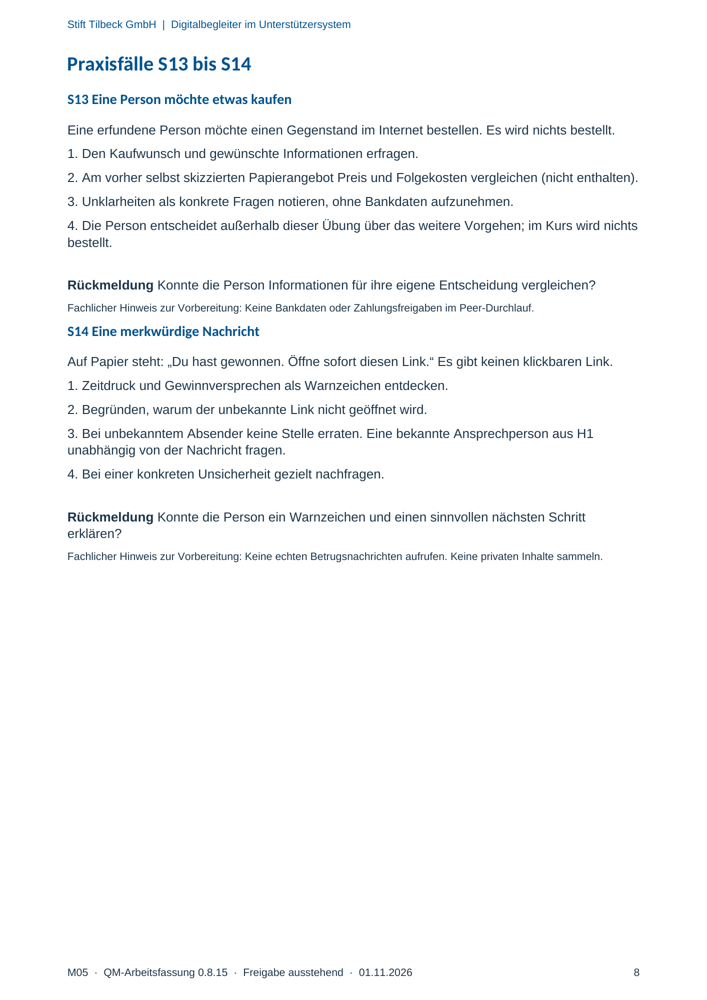

M05 · Originalseite 8
Eine Person möchte etwas kaufen
Original-Druckseite mit S13. Auf derselben Seite stehen außerdem S14. Diese sind dadurch keine zusätzliche Aufgabe.
Fragen und Ankreuzfelder werden auf dem Ausdruck bearbeitet. Die Lesefassung speichert keine Antworten.
Lesefassung · Seite 8
Stift Tilbeck GmbH | Digitalbegleiter im Unterstützersystem
M05 · QM-Arbeitsfassung 0.8.15 · Freigabe ausstehend · 01.11.2026 8
Praxisfälle S13 bis S14
S13 Eine Person möchte etwas kaufen
Eine erfundene Person möchte einen Gegenstand im Internet bestellen. Es wird nichts bestellt.
1. Den Kaufwunsch und gewünschte Informationen erfragen.
2. Am vorher selbst skizzierten Papierangebot Preis und Folgekosten vergleichen (nicht enthalten).
3. Unklarheiten als konkrete Fragen notieren, ohne Bankdaten aufzunehmen.
4. Die Person entscheidet außerhalb dieser Übung über das weitere Vorgehen; im Kurs wird nichts
bestellt.
Rückmeldung Konnte die Person Informationen für ihre eigene Entscheidung vergleichen?
Fachlicher Hinweis zur Vorbereitung: Keine Bankdaten oder Zahlungsfreigaben im Peer-Durchlauf.
S14 Eine merkwürdige Nachricht
Auf Papier steht: „Du hast gewonnen. Öffne sofort diesen Link.“ Es gibt keinen klickbaren Link.
1. Zeitdruck und Gewinnversprechen als Warnzeichen entdecken.
2. Begründen, warum der unbekannte Link nicht geöffnet wird.
3. Bei unbekanntem Absender keine Stelle erraten. Eine bekannte Ansprechperson aus H1
unabhängig von der Nachricht fragen.
4. Bei einer konkreten Unsicherheit gezielt nachfragen.
Rückmeldung Konnte die Person ein Warnzeichen und einen sinnvollen nächsten Schritt
erklären?
Fachlicher Hinweis zur Vorbereitung: Keine echten Betrugsnachrichten aufrufen. Keine privaten Inhalte sammeln.
Originalseite ansehen
